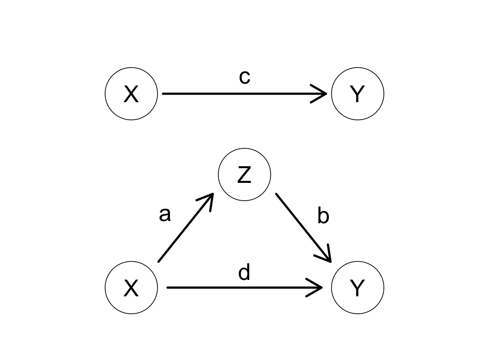

Moderation and Mediation
Introduction
Moderation and mediation are terms for measuring conditional effects. They are frequently discussed in the context of SEMs. However, both can be estimated in standard regression settings.
Moderation
Definition
Let \(X\) be a predictor, \(Y\) be a response and we are studying whether \(Z\) moderates the relationship between \(X\) and \(Y\). In other words, we want to know whether \(Z\) modifies the strength (or direction) of the relationship between \(X\) and \(Y\). For example, we could study the relationship between socio-economic status (\(X\)) and frequency of breast exams (\(Y\)). Among younger women, breast exams are rare because current recommendations are for women age 40 and over to get exams. However, in older women, there is a relationship because those with higher SES tend to be more concerned with health. Age (\(Z\)) moderates the relationship between SES and frequency of breast exams.
In Regression
Moderation is represented in a regression model with nothing more than an interaction term. There is a causal aspect to it, in that there needs to be the assumption that the predictor (\(X\)) has a causal relationship on the response (\(Y\)). If \(X\) is randomized, this assumption is satisfied. If the \(X\) is not randomized, this assumption must be based on theory and domain specific knowledge.
Fit the interaction model,
\[ Y = \beta_0 + \beta_1X + \beta_2Z + \beta_3XZ + \epsilon. \]
Therefore, \(\beta_3\) measures the moderation effect.
Sources
Mediation
Definition
Again, let \(X\) be a predictor and \(Y\) be a response. We are studying whether \(Z\) mediates the relationship between \(X\) and \(Y\). Mediating variables are more complicated that moderators. A variable (\(Z\)) is said to be a mediator if it partially or fully explains the relationship between the predictor (\(X\)) and the response (\(Y\)). The easiest way to explain this is visually.
The unmediated and mediated model follow.
In the first model, the unmediated model, the total relationship between \(X\) and \(Y\) is captured by \(c\).
In the second model, the total effect is split into direct and indirect effects. \(d\) is the direct effect and \(ab\). If the direct effect (\(d\)) is zero, then the relationship is fully mediated. In other words, without the existence of \(Z\), there is no relationship between \(X\) and \(Y\).
If the indirect effect is zero (either \(a\) or \(b\) are zero), then there is no indirect effect and no mediation occurs.
Note: If fitting with linear regression, \(c = d + ab\) and \(c\) is the total effect. Otherwise (e.g. mixed model, logistic, etc) that relationship may not be precise, so \(d + ab\) is a better estimate of the total effect.
In Regression
Important
While we can fit mediation via regression (called the Baron-Kenny approach), it is not recommended. Use either SEM or the mediation package in R or causal mediation in Stata.
To test, we fit three regression models, testing all paths above.
- Test \(c\) to establish a relationship between predictor (\(X\)) and response (\(Y\)):
\[ Y = \beta_0^{(1)} + cX + \epsilon. \]
- Test \(a\) to establish correlation between predictor (\(X\)) and moderator (\(Z\)):
\[ Z = \beta_0^{(2)} + aX + \epsilon. \]
- Test \(b\) to establish that the mediator (\(Z\)) affects the response (\(Y\)). Include both mediator (\(Z\)) and predictor (\(X\)) to establish that the relationship exists when controlling for \(X\).
\[ Y = \beta_0^{(3)} + dX + bM + \epsilon. \]
If \(c\), \(a\) and \(b\) are shown to be significant in each step above, we have established partial mediation.
If additionally \(d\) is zero, we have established full mediation.
Sources
http://davidakenny.net/cm/mediate.htm
http://data.library.virginia.edu/introduction-to-mediation-analysis/